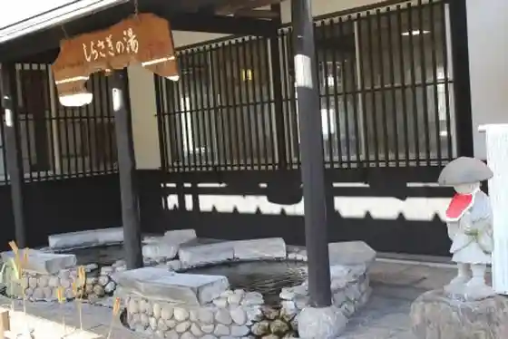
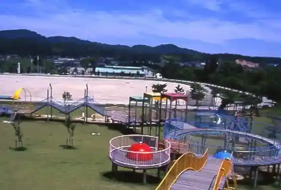
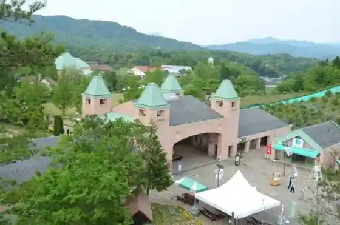
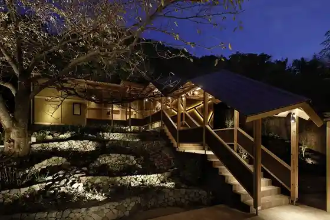

Tango Onsen Hashiudo So
Kyotango, Kyoto · 0772-75-2212
Kizu Onsen
Kyotango, Kyoto · 0772-72-0900

Mineyama Tochugaoka Park (Kyotango Hagoromo Rikujokyogijo)
Kyotango, Kyoto · 0772-62-7470

Roadside Station Tango Okoku (Shoku no Miyako)
Kyotango, Kyoto · 0772-66-3081

Hashihito Onsen Sumi Taira
Kyotango, Kyoto · 0772-75-0005

Kotobiki Hama Kakari Tsu Furiisaito Campground
Kyotango, Kyoto · 0772-72-0900
Kamiya Shrine (Kamiya Tachi Miya)
Kyotango, Kyoto
Iyasaka Ashiginu Onsen
Kyotango, Kyoto · 0772-65-2000
Roadside Station Tenkitenki Tango
Kyotango, Kyoto · 0772-75-2525
Umibe no Onsen Shoku Tabi Ichibo Kan
Kyotango, Kyoto · 0772-74-0190
Kyotango Mineyama General Park
Kyotango, Kyoto · 0772-62-3656
Shima Ji Shrine
Kyotango, Kyoto · 0772-72-0900
Tateiwa
Kyotango, Kyoto · 0772-75-1500
Kotobiki Hama
Kyotango, Kyoto · 0772-72-6070
Jiki Wo Irodoru Yado Kasho En
Kyotango, Kyoto · 0772-74-9009
Kyotango Kanko Kosha Kumihama Town Shibu
Kyotango, Kyoto · 0772-82-1781
Kotohira Shrine
Kyotango, Kyoto · 0772-62-0225
Koeki Zaidanhojin Tango Chiiki Jibasangyo Shinko Center (Amitei Tango)
Kyotango, Kyoto · 0772-72-5261
Keigamisaki
Kyotango, Kyoto · 0772-75-1500
Gosho Inaba Honke
Kyotango, Kyoto · 0772-82-2356
Kyotango Omiya Shizen Sports Park
Kyotango, Kyoto · 0772-69-0662
Roadside Station Kumihama SANKAIKAN
Kyotango, Kyoto · 0772-83-2000
Kyotango Kanko Kosha
Kyotango, Kyoto · 0772-72-6070
Tori Matsu
Kyotango, Kyoto · 0772-72-0429
Nakahama Furiisaito Oto Campground
Kyotango, Kyoto · 090-3655-1657
Tango Han Shima Matsushima Onsen Ukawa Onsen Yoshi no Village
Kyotango, Kyoto · 0772-76-1000
Kabuto Yama Tembo Tokoro
Kyotango, Kyoto · 0772-82-1781
Kumihama Onsen Yumoto Kan
Kyotango, Kyoto · 0772-83-1071
Kyotango Kanko Kosha Amino Town Shibu
Kyotango, Kyoto · 0772-72-0900
Obama Beach
Kyotango, Kyoto · 0772-72-0900
Heki Sui Gyoen
Kyotango, Kyoto · 0772-83-0355
Yuhigaura Onsen Tabi Tei Kai ‐KAI‐
Kyotango, Kyoto · 0772-74-9099
Hosomi Workshop
Kyotango, Kyoto · 0772-83-1192
Kasho En Bettei Fuka
Kyotango, Kyoto · 0772-74-9009
Sho Tenkyo Beach
Kyotango, Kyoto · 0772-83-0149
Hosokawa Garasha Fujin Insei Chi no Hi
Kyotango, Kyoto · 0772-72-6070
Kotobiki Hama Naki Suna Bunka Kan
Kyotango, Kyoto · 0772-72-5511
Furan no Kan
Kyotango, Kyoto · 0772-83-1033
Kotobiki Hama Kakari Tsu Beach
Kyotango, Kyoto · 0772-72-0900
Kotobiki Hama Yu Beach
Kyotango, Kyoto · 0772-72-0900
Tango Matsushima
Kyotango, Kyoto · 0772-75-1500
Sei Shrine
Kyotango, Kyoto · 0772-72-0900
Tateiwa Nochigahama Beach
Kyotango, Kyoto · 0772-75-2525
Kama I Hama Beach
Kyotango, Kyoto · 0772-83-0149
TANGO OPEN CENTER
Kyotango, Kyoto · 0772-68-5151
KISSUIEN Stay&Food
Kyotango, Kyoto · 0772-62-5111
Yugengaisha Tango Jajii Ranch
Kyotango, Kyoto · 0772-83-1617
Nyoi Tera
Kyotango, Kyoto · 0772-82-0163
Hama Tsume Yuhigaura Beach
Kyotango, Kyoto · 0772-72-6070
Hatcho Hama Beach
Kyotango, Kyoto · 0772-72-0900
Tateiwa Nochigahama Furiisaito Campground
Kyotango, Kyoto · 0772-75-2525
Kabuto Sanko Sono Campground
Kyotango, Kyoto · 0772-83-1457
Byobu Iwa
Kyotango, Kyoto · 0772-75-1500
Tango Sakyu
Kyotango, Kyoto · 0772-82-1781
Takeno Beach
Kyotango, Kyoto · 0772-75-1500
Ikari Kogen Ranch
Kyotango, Kyoto · 0772-76-1121
Men / Kafeterasu MATSUTARO
Kyotango, Kyoto · 0772-72-0429
Yoshihara Yamashiro Shi
Kyotango, Kyoto · 0772-69-0640
Ikari Kogen Sutekihausu
Kyotango, Kyoto · 0772-76-1061
Takeno Shuzo Yugengaisha
Kyotango, Kyoto · 0772-65-2021
Kyotango Kanko Kosha Tango Town Shibu
Kyotango, Kyoto · 0772-75-1500
Honganji
Kyotango, Kyoto · 0772-82-0154
Seishonen Yama no Ie
Kyotango, Kyoto · 0772-66-0036
Tenkitenki Village Oto Campground
Kyotango, Kyoto · 0772-75-2525
Hama Tsume Yuhigaura Onsen
Kyotango, Kyoto · 0772-72-0900
Hashihito Kogo Shotoku Taishi Boshi Zo
Kyotango, Kyoto · 0772-75-1500
Tango Hanare Mizumi Onsen
Kyotango, Kyoto · 0772-72-0900
Kumihama Onsen
Kyotango, Kyoto · 0772-82-1781
Tango Jukan Rindo
Kyotango, Kyoto · 0772-72-6070
Akira Koi Kan Yo Kokorozashi no Ya
Kyotango, Kyoto · 0772-75-2284
Heri Shiro Tera
Kyotango, Kyoto · 0772-62-0957
Omiya Bai Shrine
Kyotango, Kyoto · 0772-64-2454
Asamogawa Urashima Onsen
Kyotango, Kyoto · 0772-72-0900
Tennyo Village
Kyotango, Kyoto · 0772-62-7720
Kumihama Asa City
Kyotango, Kyoto · 0772-82-1781
Kuzuno Hama Beach
Kyotango, Kyoto · 0772-83-0149
Takajin Land Kumihama Oto Campground
Kyotango, Kyoto · 0772-83-1548
Garasusutajio (Raimu)
Kyotango, Kyoto · 0772-83-1429
Shirosugi Shuzo
Kyotango, Kyoto · 0772-64-2101
Yoshioka Shuzo Ba
Kyotango, Kyoto · 0772-65-2020
Kumano Shuzo Yugengaisha
Kyotango, Kyoto · 0772-82-0019
Takashima Beach
Kyotango, Kyoto · 090-5887-6715
Kurobe Choshi Yama Burial Mound
Kyotango, Kyoto · 0772-69-0640
Hakoishi Hama Beach
Kyotango, Kyoto · 0772-83-0149
Mo Hitotsu no Kyoto Ujo Soan
Kyotango, Kyoto · 0772-74-9009
Takashima Furiisaito Oto Campground
Kyotango, Kyoto · 090-5887-6715
Sho Tenkyo Onsen (Kirara Baths)
Kyotango, Kyoto · 0772-82-1781
Ono Sho Town Onsen
Kyotango, Kyoto · 0772-68-1122
Sho Town Park (Sho Town no Sha (Yakata))
Kyotango, Kyoto · 0772-64-5533
Kyotango Forest Park Suisu Village
Kyotango, Kyoto · 0772-66-0036
Nakahama Beach
Kyotango, Kyoto · 090-3655-1657
Hana Sato OKADA
Kyotango, Kyoto · 0772-74-5005
Tango Asa City
Kyotango, Kyoto · 0772-72-5261
Tango Mineyama Onsen
Kyotango, Kyoto · 0772-62-5771
Noma Kawa
Kyotango, Kyoto · 0772-66-0002
Hama Tsume Yuhigaura Campground
Kyotango, Kyoto · 0772-72-0900
Omiya Fureai Workshop
Kyotango, Kyoto · 0772-64-5558
Kinoshita Shuzo Yugengaisha
Kyotango, Kyoto · 0772-82-0071
Kyotango Kumihama Chuo Sports Park
Kyotango, Kyoto · 0772-69-0666
Suna Ho Beach
Kyotango, Kyoto · 0772-75-1500
Hama Tsume Onsen
Kyotango, Kyoto · 0772-72-0900
Hashihito Onsen Sato Ko no Tsuru Onsen
Kyotango, Kyoto · 0772-75-1500
Ueno Onsen
Kyotango, Kyoto · 0772-74-1306
Kumano Shrine
Kyotango, Kyoto · 0772-82-1781
Suna Ho Furiisaito Campground
Kyotango, Kyoto · 0772-75-1500
Uchiyama Buna Hayashi
Kyotango, Kyoto · 0772-69-0712
Kyotango Ritsu Local History Museum
Kyotango, Kyoto · 0772-72-4600
Myo Sei Tera
Kyotango, Kyoto · 0772-68-1022
Otani Kofun Park (Jo no Oka)
Kyotango, Kyoto · 0772-69-0640
Tango Chirimen Hassho Kinenhi
Kyotango, Kyoto · 0772-69-0450
Uddei Isanago (Kyotango Mineyama Ringyo Sogo Center)
Kyotango, Kyoto · 0772-62-5670
Sode Kokorozashi no Tanada
Kyotango, Kyoto · 0772-75-1500
Hatcho Hama Obama Onsen
Kyotango, Kyoto · 0772-72-0900
Sancho Hotel Kaze no Gakko Kyoto
Kyotango, Kyoto · 0772-66-0036
Kyu So Beach
Kyotango, Kyoto · 070-4326-6218
Tango Kodai no Sato Museum
Kyotango, Kyoto · 0772-75-2431
Tango Kanno Onsen
Kyotango, Kyoto · 0772-82-1781
Yubune Saka 2 Go Fun
Kyotango, Kyoto · 0772-69-0640
Kumihama Kantsurii Onsen 1 Go
Kyotango, Kyoto · 0772-83-0149
Onojo Shi
Kyotango, Kyoto · 0772-69-0640
Iwaya Tera
Kyotango, Kyoto · 0772-64-3946
Saihoku Shigosen to
Kyotango, Kyoto · 0772-72-0900
Amino Choshi Yama Burial Mound
Kyotango, Kyoto · 0772-69-0640
Naki Suna Onsen
Kyotango, Kyoto · 0772-72-0900
Endon Tera
Kyotango, Kyoto · 0772-84-0478
Kyotango Onsen
Kyotango, Kyoto · 0772-72-0900
Kyotango Kanko Kosha Hagoromo Suteshon (Mineyama Town Shibu, Omiya Town Shibu, Iyasaka Town Shibu)
Kyotango, Kyoto · 0772-62-8560
Heichi Jizo
Kyotango, Kyoto · 0772-69-0640
Sei no Mori
Kyotango, Kyoto · 0772-72-0900
Iso Sunayama
Kyotango, Kyoto · 0772-69-0450